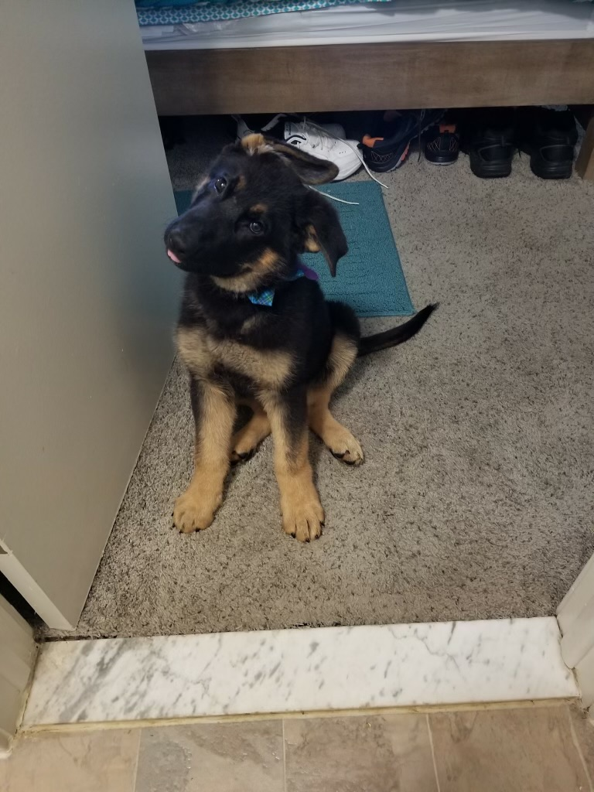
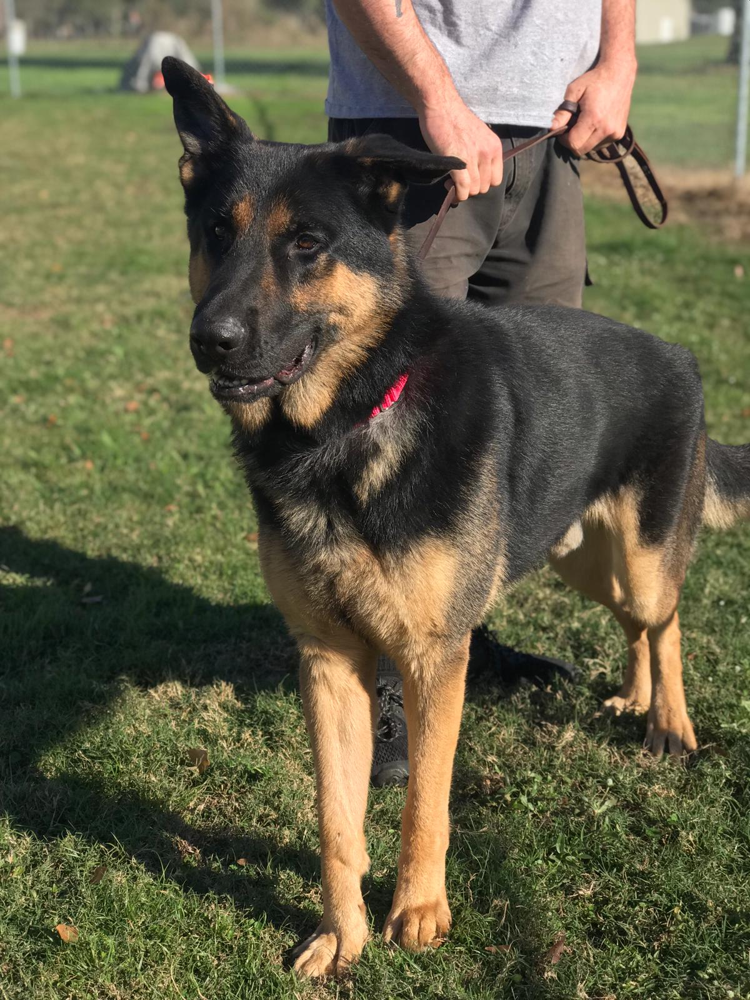
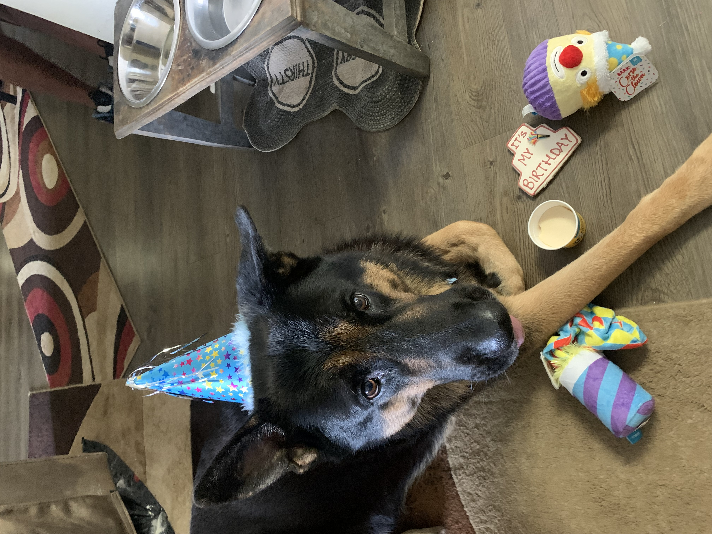

Champion is a German Shepard Dog who started a really rough life. He was the runt of his litter who had an ear infection causing one ear to not stand up. I always say we rescued each other. I was suffering terribly with mental health and I was alone. When I adopted Champion I felt like I had a purpose again. I have had him since I was 22 years old and we have spent every day togther. Having Champion has allowed me to start traveling again and also start a healthy relationship. Through it all Champion has been right by my side and I wouldn't have it any other way.
Having an Emotional Support Animal has really turned my life around. Over the past 15 years I had silently struggled with depression and anxiety. It caused me to worry and struggle with simple tasks. In 2017,Champion came into my life and helped me to regulate my mental health. Now that we have a daily routine, I am living a much healthier life and I now have a beautiful family. On days when I am struggline Champion can feel my emotions and spends time comforting me and helping me feel normal again.




© 2026, Clarissa James. All rights reserved